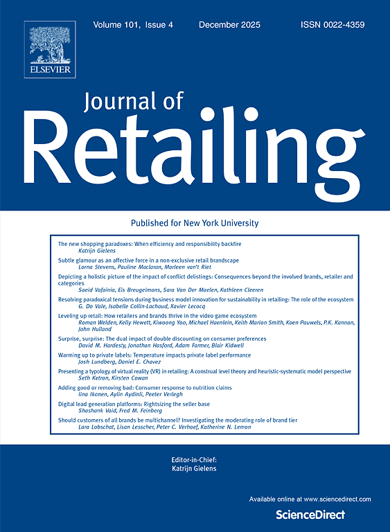

The Diminishing Local Lens: A Study on the Economic Effects of Local Newspaper Closures on Regional Brands
Forthcoming
MIS Quarterly
This study examines the relationship between local newspaper closures and regional brand revenues, extending research on the consequences of losing local information infrastructure from institutional to consumer markets. Using NielsenIQ retail scanner data (2006–2017) matched with hand-collected newspaper closure records and a Difference-in-Differences framework with outcome-based matching (PanelMatch), we estimate the association between closures and weekly local brand revenues. Local brands in treated counties experience an average revenue decline of approximately 7.8%, consistent across the primary PanelMatch estimator and six complementary DiD estimators for staggered treatment designs. National brand revenues in the treated counties are unaffected, indicating the decline is specific to local brands rather than reflecting a general demand contraction. Heterogeneity analysis reveals this average masks systematic variation along three dimensions. Revenue declines are larger in categories with deeper assortments and greater price variation, and among brands with lower sales volumes and price premiums. At the county level, larger populations, higher employment, and firm-defendant case volume attenuate the decline, while higher commercial density amplifies it. These patterns indicate the consequences of removing a local information channel concentrate where informational complexity is greatest, where brands lack established market resilience, and where the local market offers fewer substitute information sources.
Dynamic Pricing for New Products Using a Utility-Based Generalization of the Bass Diffusion Model
The Bass Model (BM) has an excellent track record in the realm of new product sales forecasting. However, its use for optimal dynamic pricing or advertising is relatively limited because the Generalized Bass Model (GBM), which extends the BM to handle marketing variables, uses only percentage changes in marketing variables, rather than their actual values. This restricts the GBM's prescriptive use, for example, to derive the optimal price path for a new product, conditional on an assumed launch price, but not the launch price itself. In this paper, we employ a utility-based extension of the BM, which can yield normative prescriptions regarding both the introductory price and the price path after launch, for the new product. We offer two versions of this utility-based diffusion model, namely, the Bass-Gumbel Diffusion Model (BGDM) and the Bass-Logit Diffusion Model (BLDM), the latter of which has been previously used. We show that both the BGDM and BLDM handily outperform the GBM in forecasting new product sales using empirical data from four product categories. We discuss how to estimate the BGDM and BLDM in the absence of past sales data. We compare the optimal pricing policy of the BLDM with the GBM and derive optimal pricing policies that are implied by the BLDM under various ranges of model parameters. We illustrate a dynamic pricing approach that allows managers to derive optimal marketing policies in a computationally convenient manner and extend this approach to a competitive, multiproduct case.

Profiting from the Decoy Effect: A Case Study of an Online Diamond Retailer
The decoy effect (DE) has been robustly documented across dozens of product categories and choice settings using laboratory experiments. However, it has never been verified in a real product market in the literature. In this paper, we empirically test and quantify the DE in the diamond sales of a leading online jewelry retailer. We develop a diamond-level proportional hazard framework by jointly modeling market-level decoy–dominant detection probabilities and the boost in sales upon detection of dominants. Results suggest that decoy–dominant detection probabilities are low (11%–25%) in the diamond market; however, upon detection, the DE increases dominant diamonds' sale hazards significantly (1.8–3.2 times). In terms of the managerial significance, we find that the DE substantially increases the diamond retailer's gross profit by 14.3%. We further conduct simulation studies to understand the DE's profit impact under various dominance scenarios.
Modeling Emerging-Market Firms' Competitive Retail Distribution Strategies
In emerging markets, the effective implementation of distribution strategies is challenged by underdeveloped road infrastructure and a low penetration of retail stores that are insufficient in meeting customer needs. In addition, products are typically distributed in multiple forms through multiple retail channels. Given the competitive landscape, manufacturers' distribution strategies should be based on anticipation of competitor reactions. Accordingly, the authors develop a manufacturer-level competition model to study the distribution and price decisions of insecticide manufacturers competing across multiple product forms and retail channels. Their study shows that both consumer preferences and estimated production and distribution costs vary across brands, product forms, and retail channels; that ignoring distribution and solely focusing on price competition results in up to a 55% overestimation of manufacturer profit margins; and that observed pricing and distribution patterns support competition rather than collusion among manufacturers. Through counterfactual studies, the authors find that manufacturers respond to decreases in distribution costs and to the exclusive distribution of more preferred manufacturers by asymmetrically changing their price and distribution decisions across different retail channels.
Dynamic Pricing in a Distribution Channel in the Presence of Switching Costs
We advance the literature on dynamic oligopoly pricing models in the presence of switching costs by additionally modeling the strategic pricing role of the retailer within the distribution channel. In doing this, we study the relative dynamic pricing implications of how current retail and wholesale prices for a brand must optimally take into account past and future demand, respectively, for the brand. Using scanner data from the cola market, we find that while the retailer exploits the benefit of inertial demand by appropriately increasing the retail profit margin, the cost of investing is borne entirely by the manufacturers. We use simulation studies to show how the retailer will lose its ability to leverage the benefits of inertial demand as consumers become more price sensitive. We also show that when inertia of the more price-sensitive customer segment increases, the aggregate welfare of consumers, the retailer, and manufacturers may increase.
Dynamically Managing a Profitable Email Marketing Program
Although email marketing is highly profitable and widely used by marketers, it has received limited attention in the marketing literature. Extant research has focused on either customers' email responses or the "average" effect of emails on purchases. In this article, the authors use data from a U.S. home improvement retailer to study customers' email open and purchase behaviors by using a unified hidden Markov and copula framework. Contrary to conventional wisdom, the authors find that email-active customers are not necessarily active in purchases, and vice versa. Furthermore, the number of emails sent by the retailer has a nonlinear effect on both the retailer's short- and long-term profitability. Through a counterfactual study, the authors provide a decision support system to guide retailers in making optimal email contact decisions. This study shows that sending the right number of emails is vital for long-term profitability. For example, sending four (ten) emails instead of the optimal number of seven emails can cause the retailer to lose 32% (16%) of its lifetime profit per customer.
Behavioral Price Discrimination in the Presence of Switching Costs
We study the strategic impacts of behavioral price discrimination (BPD) on manufacturers and retailers in a distribution channel when there are switching costs in consumer demand. Unlike previous empirical studies of behavioral price discrimination, which rely only on differences in price elasticity across customers, our pricing model allows the firm strategies to additionally account for differences in price elasticity across time (due to switching costs). We estimate a dynamic pricing model using empirical data from the cola category and, through a series of counterfactuals, we find that the retailer should simply outsource the data analytics and customization of coupons to manufacturers and improve its profit beyond what it can achieve by proactively couponing on its own. We further find that serving as an information broker to sell its customer database to manufacturers can be a vital source of profit to the retailer. By contrast, manufacturers end up worse off, illustrating that customer information is a potent source of channel power to the retailer. Finally, we show that simply using customers' most recent purchase information can significantly impact firms' profits. BPD based on this information is easy to implement and of low cost to manufacturers and retailers.

Channel Intermediaries and Manufacturer Performance: An Exploratory Investigation in an Emerging Market
Channel intermediaries (hereafter, intermediaries) are among the most critical elements of any supply chain as the bulk of manufacturing output is transported through them. However, we have a limited understanding of the approach a manufacturer should take to achieve the dual goal of increasing profitability and intermediary satisfaction. To provide manufacturers with practical strategies to boost their performance and their intermediaries' satisfaction, we rely on three related studies. In Study 1, through interviews with managers and intermediaries, we find that distribution alignment across intermediary, market, and product types may be a practical strategy for both manufacturers and intermediaries. In Study 2, by using a robust empirical methodology with data from a construction product manufacturer operating in an emerging market, we find that various combinations of intermediary, market, and product types affect the manufacturer's performance differently. Accordingly, through a supply-side examination, we quantify the revenue impact of reallocating the studied manufacturer's retail distribution resources among different intermediary-, market-, and product-type combinations. In Study 3, through a field implementation, we find that our recommended intermediary alignment strategy from Study 2 substantially boosts both the manufacturer's performance (by fourteen percent in revenue and thirteen percent in profit) and intermediaries' satisfaction (by 7.71%). Thus, with our qualitative, empirical, and field studies, we contribute to the existing research in channel management, emerging market retailing, retail distribution, and marketing strategy.